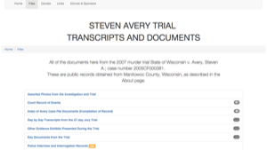

I've lived in Japan, China, South Korea, and New Zealand. Now I'm back home in sunny Philadelphia, Pennsylvania. I'm a newly minted Front End Web Developer, which is pretty tricky, but definitely not as tricky as teaching Korean kindergarteners how to make pancakes.
I have experience with HTML, CSS, Ruby on Rails, Adobe Photoshop + Premier Pro + Lightbox, Bootstrap, and I am currently obsessed with SVG files. I'm a quick learner; you have to be when you move to China and realize you'd better pick up Mandarin if you want to eat. 现今,我的中文不好...
Want to see what the hell I was doing in New Zealand? (Hint: It involved penguins.) Have a copy of my résumé.
Well, it's not a particularly sexy or exciting aspect of web development, but someone's gotta make all of those user stories and figure what the hell version of a database we're inheriting. If that sounds like fun to you (it does to me), check out a mockup I've done for Princeton Health's physician database.
Built with Ruby on Rails, this app allows user to visualize open data from Philly's bike share program.
Over 50,000 lines of CSV data was transfered into a Postgres database. Now community members can check out bike stations close to their homes, schools, and jobs and see when they're busiest or least used. Users can also overlay multiple stations to compare and contrast data.
Tired of always hoping an praying local watering holes had our favorite bevs (Pliny the Younger? Stag's Leap?), fellow junior dev Brittany and I wondered how we could fix this. We came up with TapStreet, a Ruby on Rails app that lets users place a marker on a map when they find a rare wine or beer in Philly and beyond.
This app also integrated wine and beer APIs to auto complete searches. Users can also sign in via Twitter, if they so choose.
Built as a way to get into Bootstrap, to possibly serve as a replacement for StevenAveryCase.Org, which released documents pertaining to the Making A Murderer documentary.

See it live over here.
Want to chat? Email me! weldon.kris@gmail.com
I'm still learning a lot, so any tips or tricks are greatly appreciated.
Are you a fellow Philadelphian? Let's go get coffee! Or beer. (Preferably beer.)